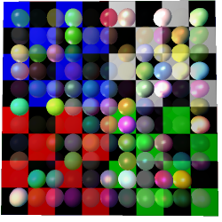
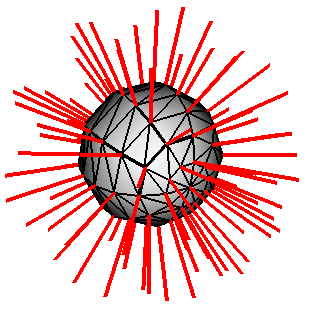

Fluxus manual v0.8 : (C) 2005 Dave Griffiths : dave at pawfal dot org : www.pawfal.org
8.0 The appearance of primitives
Now that we have primitives and lights for shading them, it's time to introduce
the ways that you can modify the appearence of your primitives.
8.1 Surface parameters
These surface parameters can be treated exactly like the rest of the state
items - transforms, (colour) etc. They can either be set using the state stack
when building primitives, or set later using (grab)

some spheres with random materials over a textured plane
(opacity n)
set the opacity value on the current state
(specular v)
set the specular colour on the current state
(ambient v)
set the ambient colour on the current state
(emissive v)
set the emissive colour on the current state
(shinyness n)
set the shinyness on the current state
(texture n)
set the texture on the current state, using a texture ID
Textures are loaded using (load-texture filename), they are cached so they
won't load more than once, so you can easily just call:
(texture (load-texture "path/to/mytexture.png"))
Textures have to be png format, and support alpha transparency.
(line-width n)
alters the line width in pixels
(point-width n)
alters the point width in pixels
(blend-mode src dest)
sets the blend mode for the primitive's alpha blending function, src and dest
are strings of the following type:
zero
one
dst-color
one-minus-dst-color
src-alpha
one-minus-src-alpha
dst-alpha
one-minus-dst-alpha
src-alpha-saturate (src only)
8.2 Render hints
There are other miscellaneous options that can change the way a primitive is
rendered. These options are called hints, as for some primitives they may not
apply, or may do different things. They are mainly useful for debugging, or
special cases - sometimes just for some fun.

a poly sphere with normals, wireframe and solid hints, and line width set to
4 pixels
(hint-none)
clear the current render hints
(hint-solid)
render solid - defaults to on
(hint-wire)
render wireframe representation
(hint-normal)
render normals, very handy
(hint-points)
render vertex or cv points
(hint-anti-alias)
render antialiased mode
(hint-unlit)
disable lighting